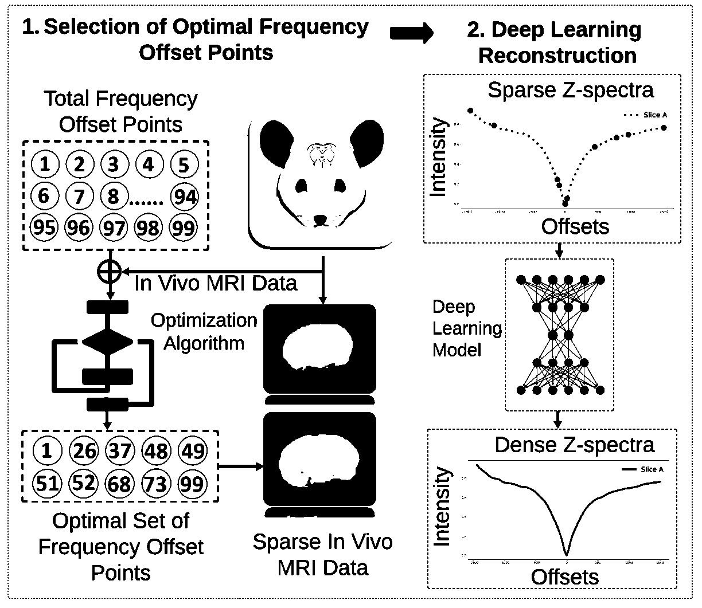
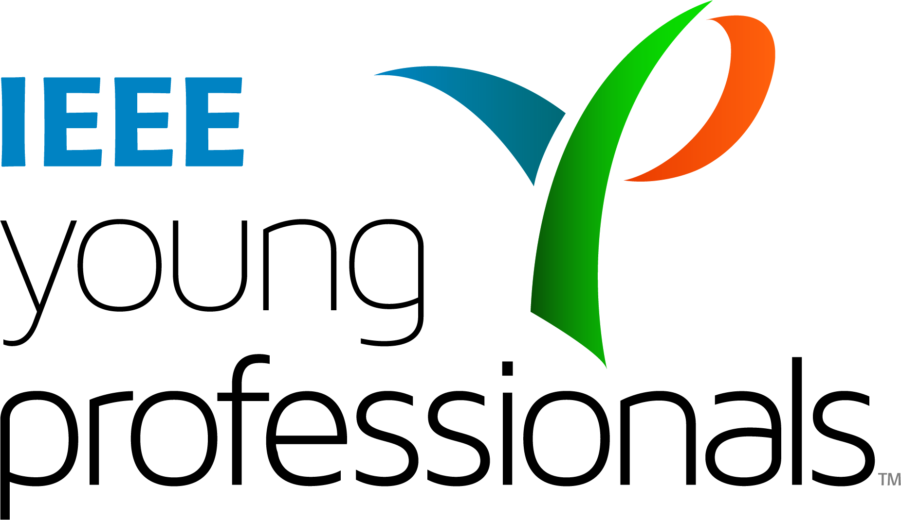
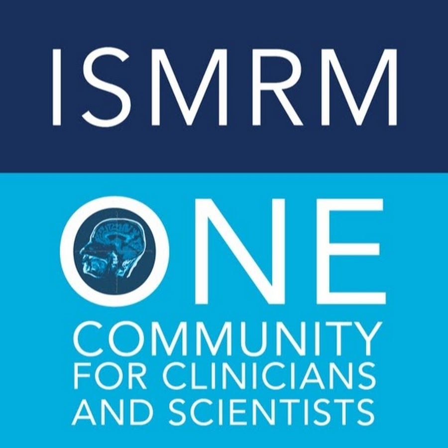

Adarsha Bhattarai

I am currently pursuing a Ph.D. in Electrical and Computer Engineering at the University of Nebraska-Lincoln. My work focuses on applying AI, machine learning, and advanced computational techniques to address challenges in biomedical engineering.
Google Scholar. CV. GitHub. Linkedin. Blog
Email: abhattarai3@huskers.unl.edu
Professional Experience
 University of Nebraska-Lincoln
University of Nebraska-Lincoln
Lecturer
01/2024 - 05/2024
Endless Health
R&D Intern
Summer 2023
Advisor: Cooper Galvin
University of Nebraska-Lincoln
Research and Teaching Assistant
08/2021 - Present
 Furmak Machinery
Furmak Machinery
Industry Intern
Winter 2021
Reference
 Kiliç Machines and Automations
Kiliç Machines and Automations
Industry Intern
Summer 2020
Reference
 Koç University
Koç University
Research Intern
Summer 2019
Advisor: Ertugrul Basar
Reference
Selected Research Accomplishments
-

Accelerated CEST MRI Acquisition.
Ongoing project: Developing optimization strategies and advanced techniques for biomedical image reconstruction.
Image processing skills: MIPAV, ITK-SNAP, 3D Slicer, and MATLAB.
AI models: Autoencoders and U-Nets
Programming and Libraries: Python, NumPy, Pandas, Keras, and TensorFlow.
Two papers in review at: IEEE Conference and IEEE Access Journal

1. Adaptive partition of ECG diagnosis between cloud and wearable sensor net using open-loop and closed-loop switch mode.
Bhattarai, Adarsha, et al. IEEE Access 10 (2022): 63684-63697.
Read the paper
2. An integrated secure efficient computing architecture for embedded and remote ECG diagnosis.
Bhattarai, Adarsha, and Dongming Peng. Springer Nature Computer Science 4.1 (2022): 45.
Read the paper
3. An Intelligent Wearable ECG Sensor in Intra-medical Virtual Chain Network and Inter-medical Virtual Chain Network.
Bhattarai, Adarsha, and Dongming Peng. Springer Nature Computer Science 5.4 (2024): 329.
Read the paper
4. Enhancing Wearable ECG Sensors: A Secure, Accurate and Efficient System Architecture for Resource-Constrained ECG Monitoring.
Bhattarai, Adarsha, et al. 2024 IEEE 14th Annual Computing and Communication Workshop and Conference (CCWC).
Read the paper
5. Multi-Tier Arrhythmia Detection: Achieving AI Hardware Compatibility Across Diverse Nodes.
Bhattarai, Adarsha, Yutong Liu, and Dongming Peng. 2024 IEEE World AI IoT Congress (AIIoT).
Read the paper
Notable Project Accomplishments

HeartGPT: An Innovative Food Categorization and Health Scoring Model
Adarsha. (2024). Heart-GPT: LLM Project. GitHub. https://github.com/adarsha30735/1. HeartGPT-LLM-Project
View the project
2. NDVI Calculator: An Innovative Agricultural Software Solution
Adarsha. (2024). NDVI-and-2D-CNN-Plant-Leaf-Classification. GitHub. https://github.com/adarsha30735/NDVI-and-2D-CNN-Plant-Leaf-Classification
View the project
3. Automated Plant Disease Diagnosis Using 2D-CNN
Adarsha. (2024). NDVI-and-2D-CNN-Plant-Leaf-Classification. GitHub. https://github.com/adarsha30735/NDVI-and-2D-CNN-Plant-Leaf-Classification
View the project
Grant and Fellowship
Holling Fellowship - University of Nebraska-Lincoln (07/2022-present)
GRACA Grant - University of Nebraska Omaha (05/2023)
Bosporus Scholarship Fellow - Istanbul University (08/2017-07/2021)
 Golden Jubilee Fellowship - Government of India (02/2015-02/2016)
Golden Jubilee Fellowship - Government of India (02/2015-02/2016)
Invited Conference Talks and Awards
- Best Research Paper Award: 2024 IEEE 14th Annual CCWC (Las Vegas, Nevada)
- Best Oral Presentation Award: UNO Student Research Fair, March 2024 (Nebraska, Omaha).
- Artificial Intelligence Conference: 2024 IEEE World AI IoT Congress (Seattle, Washington).


Professional Certifications
Specialization Courses Completed
- Image Processing
- Computer Vision
- Practical Machine Learning
- Cyber/Network/Wireless Security (3 courses)
- Foundation of System Engineering
- Multivariate Random Process
- Digital Signal Processing
- AI presentation at NATI, Summer 2023: Access the PowerPoint Presentation
- C Programming Lecture, Spring 2024: Watch one of my lectures at University of Nebraska-Lincoln
See full transcript profile.
Professional Membership
 Institute of Electrical and Electronics Engineers (IEEE)
IEEE Young Professional Membership, USA International Society for Magnetic Resonance in Medicine (ISMRM)
ISMRM Trainee Membership, USA
Presentation and Lectures
Contact Me
Email: abhattarai3@huskers.unl.edu
LinkedIn: linkedin.com/in/adarsha-bhattarai
GitHub: github.com/adarsha30735
{kind=link}